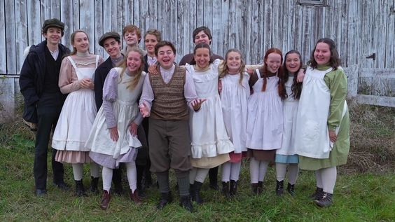
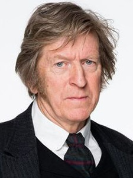

Anne with an E
Elenco

Foto de parte do elenco
Principais:
Amybeth McNulty
Amybeth
- Papel: Anne Shirley Cuthbert
- Nascimento: 7 de novembro de 2001 (20 anos)
- Nacionalidades: Irlandesa, Canadense
- Outros papeis: Anya-Taylor Joy (Morgan: A Evolução), Charlie McLeod (Maternal) e Vickie (Stranger Things).
Lucas Jade Zumann
Lucas
- Papel: Gilbert Blythe
- Nascimento: 12 de dezembro de 2000 (21 anos)
- Nacionalidade: Estadunidense
- Outros papeis: Milo (A entidade 2) e Amie Fields (20th Century Women).
Geraldine James
Geraldine
- Papel: Marilla Cuthbert
- Nascimento: 6 de julho de 1950 (71 anos)
- Nacionalidade: Britânica
- Outros papeis: Theresa Thornycroft (Benediction) e Queen Mary (Downton Abbey).
Robert Holmes Thomson

R.H. Thomson
- Papel: Matthew Cuthbert
- Nascimento: 24 de setembro de 1947 (74 anos)
- Nacionalidade: Canadense
- Outros papeis: Frank (O Preço da Traição) e Billy Herman (A Origem da Vida).
Dalila Bela Caballero
Dalila
- Papel: Diana Barry
- Nascimento: 5 de outubro de 2001 (20 anos)
- Nacionalidade: Canadense
- Outros papeis: Olívia (Esquadrão Bizarro-temp 1) e Taylor Pringle (Diário de um Banana).
Cory Gruter-Andrew
Cory
- Papel: Cole Mackenzie
- Nascimento: 1 de setembro de 2001 (20 anos)
- Nacionalidade: Canadense
- Outros papeis: Aden (The 100-Temp 3) e Henry Iver (The Man In the High Castle-Temp 4).
Descubra mais aqui